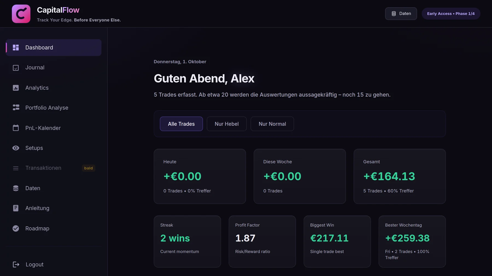

Dein Broker zeigt dir,
was du verdient hast.
Nicht, warum.
CapitalFlow ist ein Trading-Journal für Swing Trader bei Trade Republic. Es liest deinen Transaktionsexport ein, rechnet bei Knock-Outs aus, wie nah du an der Schwelle warst, und zeigt dir schwarz auf weiß, welche Art Trade dich Geld kostet.
Installiert sich als eigenes Programm mit Icon und eigenem Fenster — ohne Store, ohne Setup-Datei. Läuft auf Windows, Mac, iPhone und Android.

Wofür das gut ist
Drei Zahlen, die in keiner Broker-App stehen — und die bei gehebelten Produkten über Gewinn und Totalverlust entscheiden.
KO-Abstand
Wie weit der Kurs fallen durfte, bevor alles weg ist. Im Rückblick siehst du, ob deine Gewinner immer die knappen Abstände waren — und wann der eine Totalverlust kam, der alles davor auffrisst.
Echter Hebel
Nicht der, den der Schein behauptet, sondern der auf dein eingesetztes Geld. Aus Knockout-Preis und angezeigtem Hebel zurückgerechnet.
Risiko in Euro
Was dein Stop dich gekostet hätte. Liegt er jenseits der Schwelle, steht dort der volle Einsatz — mehr als alles kannst du nicht verlieren.
Du musst nichts abtippen
Trade Republic gibt dir eine Datei mit allem, was du gehandelt hast. CapitalFlow liest sie ein, fasst Käufe und Verkäufe je Wertpapier zu Trades zusammen, zieht Gebühren ab und überspringt, was schon drin ist. Denselben Export kannst du jeden Monat neu einlesen.


So kommst du rein
- Zugangsschlüssel besorgen. CapitalFlow ist noch nicht offen. Zugang gibt es nur direkt von Maxim.
- App installieren oder einfach im Browser öffnen — beides derselbe Stand, beides dieselben Daten.
- Mit Discord anmelden, danach erscheint das Feld für den Schlüssel. Vorher gibt es kein Konto, das freigeschaltet werden könnte.
- Transaktionsexport einlesen und du hast dein Journal. Dauert zwei Minuten.